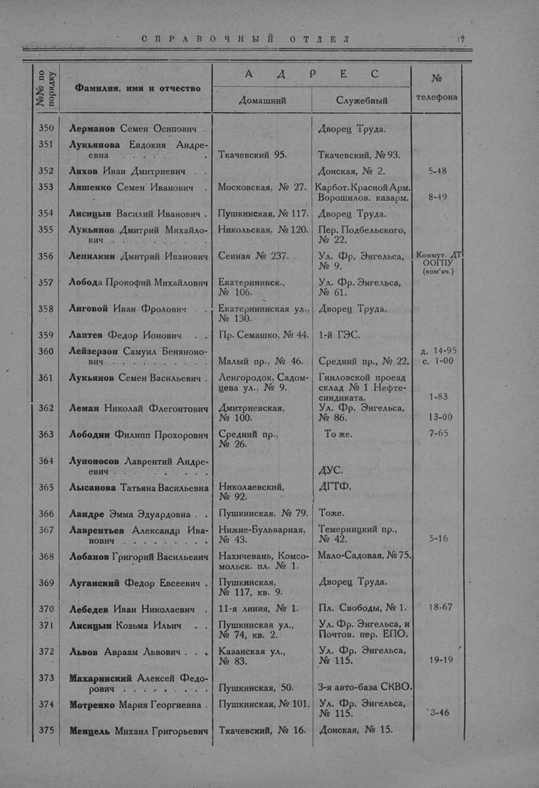

Лист источника 65
Скан

Распознанный текст
СПРАВОЧНЫЙ ОТДЕЛ 17
№№ по
порядку Фамилия, имя и отчество А Д Р Е С №
телефона
Домашний Служебный
350 Лерманов Семен Осипович . . Дворец Труда.
351 Лукьянова Евдокия Андре-
евна . . . . . . . . . Ткачевский 95. Ткачевский, № 93.
352 Ляхов Иван Дмитриевич Донская, № 2. 5-48
353 Ляшенко Семен Иванович Московская, № 27. Карбот. Красной Арм.
Ворошилов. казарм. 8-49
354 Лисицын Василий Иванович . Пушкинская, № 117. Дворец Труда.
355 Лукьянов Дмитрий Михайло-
вич . . . . . . . . . Никольская, № 120. Пер. Подбельского,
№ 22.
356 Лепилкин Дмитрий Иванович Сенная № 237. Ул. Фр. Энгельса,
№ 9. Коммут. ДТ
ООГПУ
(ком'яч.)
357 Лобода Прокофий Михайлович Екатерининск.,
№ 106. Ул. Фр. Энгельса,
№ 61.
358 Лиговой Иван Фролович Екатерининская ул.,
№ 130. Дворец Труда.
359 Лаптев Федор Ионович . . Пр. Семашко, № 44. 1-й ГЭС.
360 Лейзерзон Самуил Беняноно-
вич . . . . . . . . . Малый пр., № 46. Средний пр., № 22. д. 14-95
с. 1-00
361 Лукьянов Семен Васильевич . Ленгородок, Садом-
цева ул., № 9. Гниловской проезд
склад № 1 Нефте-
синдиката. 1-83
362 Леман Николай Флегонтович Дмитриевская,
№ 100. Ул. Фр. Энгельса,
№ 86. 13-00
363 Лободин Филипп Прохорович Средний пр.,
№ 26. То же. 7-65
364 Лупоносов Лаврентий Андре-
евич . . . . . . . . . ДУС.
365 Лысанова Татьяна Васильевна Николаевский,
№ 92. ДГТФ.
366 Ландре Эмма Эдуардовна . . Пушкинская, № 79. Тоже.
367 Лаврентьев Александр Ива-
нович . . . . . . . . Нижне-Бульварная,
№ 43. Темерницкий пр.,
№ 42. 5-16
368 Лобанов Григорий Васильевич Нахичевань, Комсо-
мольск. пл. № 1. Мало-Садовая, № 75.
369 Луганский Федор Евсеевич . Пушкинская,
№ 117, кв. 9. Дворец Труда.
370 Лебедев Иван Николаевич . 11-я линия, № 1. Пл. Свободы, № 1. 18-67
371 Лисицын Козьма Ильич . Пушкинская ул.,
№ 74, кв. 2. Ул. Фр. Энгельса, и
Почтов. пер. ЕПО.
372 Львов Авраам Львович . . Казанская ул.,
№ 83. Ул. Фр. Энгельса,
№ 115. 19-19
373 Махаринский Алексей Федо-
рович . . . . . . . . Пушкинская, 50. 3-я авто-база СКВО.
374 Мотренко Мария Георгиевна . Пушкинская, № 101. Ул. Фр. Энгельса,
№ 115. 3-46
375 Мендель Михаил Григорьевич Ткачевский, № 16. Донская, № 15.